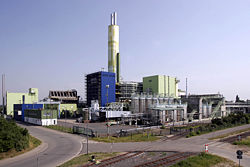

A luminium
: présent dans les boîtes de conserves, les
emballages cosmétiques, les casseroles, les voitures, les
bateaux, les bâtiments, les avions d'Airbus ou dans la fusée
Ariane, il est lui aussi indéfiniment recyclable. Son coût
de fabrication reste très élevé (du fait
notamment de l'utilisation massive de l'électricité),
c’est pourquoi son recyclage représente un enjeu
économique majeur. Avec 670 canettes on fabrique un VTT.
luminium
: présent dans les boîtes de conserves, les
emballages cosmétiques, les casseroles, les voitures, les
bateaux, les bâtiments, les avions d'Airbus ou dans la fusée
Ariane, il est lui aussi indéfiniment recyclable. Son coût
de fabrication reste très élevé (du fait
notamment de l'utilisation massive de l'électricité),
c’est pourquoi son recyclage représente un enjeu
économique majeur. Avec 670 canettes on fabrique un VTT.

C
 liquer
le logo pour consulter la vidéo
liquer
le logo pour consulter la vidéo
< Recyclage >